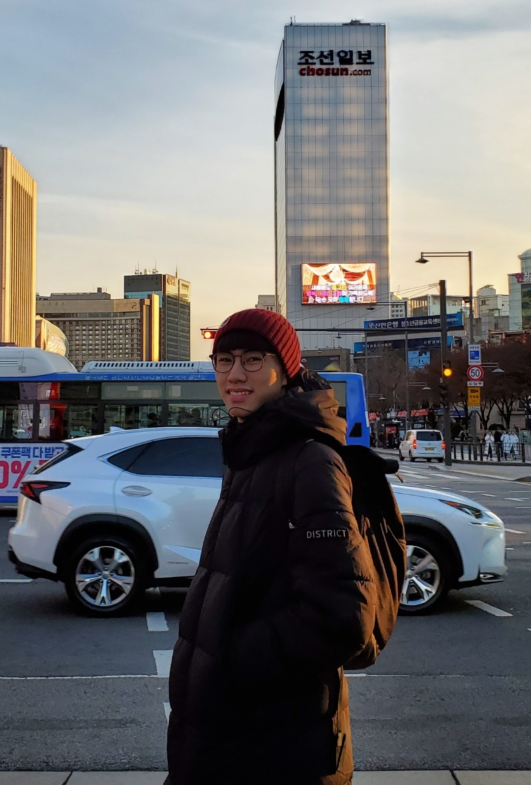

About Me

Hey there, I'm Adam Yun, and I'm all about tech and innovation. With a degree in computer science from San Francisco State University, I bring a mix of creativity and analytical skills to the table. As a Fullstack Developer at UBTS in Singapore, I thrive on challenges that push me to think outside the box and explore new ideas. I'm always curious and love diving into the latest tech trends to see what's next. Off the clock, you'll find me exploring new coding languages or tinkering with side projects. I truly believe in the power of innovation to shape a better world, and I'm excited to make my mark in the ever-evolving tech landscape.